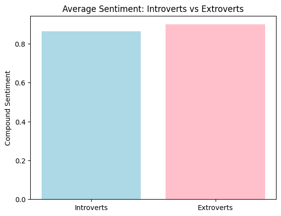

---
title: "Planning the Perfect Outdoor Event in Philadelphia: What 20 Years of Weather Data Reveals"
author: "Jenna Jacobs"
date: "02/06/2026"
categories:
- DOW
- Weather
---import pandas as pd
import numpy as np
import matplotlib.pyplot as plt
import nltk
from nltk.sentiment import SentimentIntensityAnalyzer
mbti_df = pd.read_csv('mbti.csv')nltk.download('vader_lexicon')[nltk_data] Downloading package vader_lexicon to
[nltk_data] /Commjhub/jupyterhub/home/j3nnajacobs/nltk_data...
[nltk_data] Package vader_lexicon is already up-to-date!Trueextrovert = mbti_df[mbti_df["type"].str.startswith("E")]
print(extroverts) filename type posts
1 1 ENTP 'I'm finding the lack of me in these posts ver...
4 4 ENTJ 'You're fired.|||That's another silly misconce...
11 11 ENFJ 'https://www.youtube.com/watch?v=PLAaiKvHvZs||...
22 22 ENTJ 'Now I'm interested. But too lazy to go resear...
24 24 ENTJ 'Still going strong at just over the two year ...
... ... ... ...
8659 8659 ENFP 'leoni I had really bad social anxiety until I...
8661 8661 ENTP '**haven't logged in and read posts for over 6...
8665 8665 ENTP 'This test wasn't even close on my gender, age...
8667 8667 ENTP 'I think generally people experience post trau...
8671 8671 ENFP 'So...if this thread already exists someplace ...
[1999 rows x 3 columns]sid = SentimentIntensityAnalyzer()extrovert_compound_mean = extrovert["posts"].astype(str).apply(lambda x: sid.polarity_scores(x)["compound"]).mean()
print(extrovert_compound_mean)0.8988430715357678extrovert_compound_min = extrovert["posts"].astype(str).apply(lambda x: sid.polarity_scores(x)["compound"]).min()
print(extrovert_compound_min)-0.9988extrovert_compound_max = extrovert["posts"].astype(str).apply(lambda x: sid.polarity_scores(x)["compound"]).max()
print(extrovert_compound_max)0.9999introvert = mbti_df[mbti_df["type"].str.startswith("I")]
print(introvert) filename type posts
0 0 INFJ 'http://www.youtube.com/watch?v=qsXHcwe3krw|||...
2 2 INTP 'Good one _____ https://www.youtube.com/wat...
3 3 INTJ 'Dear INTP, I enjoyed our conversation the o...
5 5 INTJ '18/37 @.@|||Science is not perfect. No scien...
6 6 INFJ 'No, I can't draw on my own nails (haha). Thos...
... ... ... ...
8669 8669 INFJ 'I'm not sure about a method for picking out I...
8670 8670 ISFP 'https://www.youtube.com/watch?v=t8edHB_h908||...
8672 8672 INTP 'So many questions when i do these things. I ...
8673 8673 INFP 'I am very conflicted right now when it comes ...
8674 8674 INFP 'It has been too long since I have been on per...
[6676 rows x 3 columns]introvert_compound_mean = introvert["posts"].astype(str).apply(lambda x: sid.polarity_scores(x)["compound"]).mean()
print(introvert_compound_mean)0.8630034901138406introvert_compound_min = extrovert["posts"].astype(str).apply(lambda x: sid.polarity_scores(x)["compound"]).min()
print(introvert_compound_min)-0.9988introvert_compound_max = extrovert["posts"].astype(str).apply(lambda x: sid.polarity_scores(x)["compound"]).max()
print(introvert_compound_max)0.9999intro_extro_means = introvert_compound_meanplt.bar(["Introverts", "Extroverts"],[introvert_compound_mean, extrovert_compound_mean], color=["lightblue", "pink"])
plt.title("Average Sentiment: Introverts vs Extroverts")
plt.ylabel("Compound Sentiment")
plt.show()